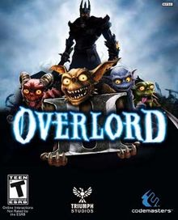

Latest News
Latest News
Overlord 2
By Randolph Ramsay on June 25, 2009 at 12:09AM PDTGame Rating 8/10
Genre: Statergy, Action, Fantasy
The impish minions of the Overlord universe haven't been idle in the two years that have passed since the first game and have emerged with a host of new tricks in Overlord II. The evil little scamps have used the time off to learn how to operate machinery, wear disguises, sail the open seas, ride mounts, and get possessed by their evil master, as well as develop an uncanny talent for attacking baby seals. These additions make Overlord II a more varied experience than the first game, and while some of the issues that hampered the original have been addressed, they haven't exactly been fixed. Overlord II retains the gleeful maliciousness of the series; thus, it's still great fun to have a small army of nasty little blighters at your disposal to wreak havoc. But because the in-game camera is still shaky, the targeting spotty, and the minions apt to do some very dumb things, you can expect quite a bit of frustration to go along with your enjoyment.